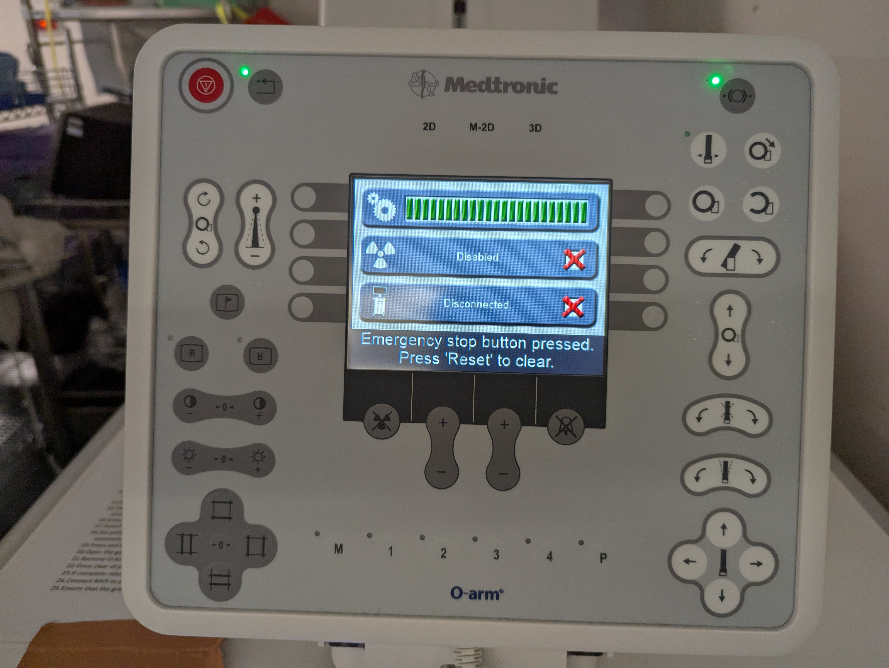
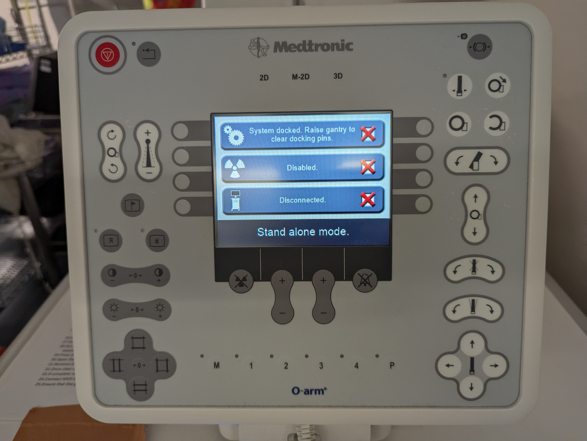
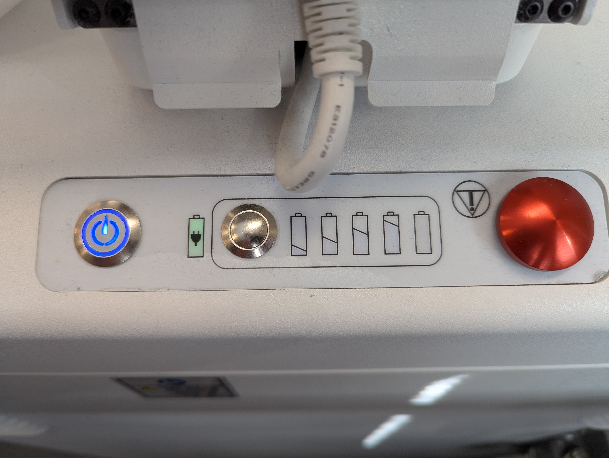

O Arm Start Up Procedure and Quick Guide
The O Arm is made up of 2 elements – The O Arm ring itself and the mobile viewing station (MVS).
- To start it up, disconnect the umbilical between the O Arm and the MVS.
- Press and hold the power button on the O Arm until it begins to start up.
- You can bring the MVS into theatre while this happens.
IMPORTANT - Do NOT try to move the O Arm while it is starting up. If you do, this is likely to mess up the starting procedure and it will need to be restarted.
-
 
- The button on the top left of the O Arm panel will start flashing, press this button and you will hear a beep – Continue waiting for it to start up.
- Once the screen reads “Stand Alone Mode” the O Arm is ready to be moved.
- Press and hold the handlebar to release the breaks and move the O Arm.
- Plug the MVS into power so that it has a green light on the front – Do not turn it on yet.
- Drive the O Arm into the theatre.
- Connect the umbilical from the MVS to the O Arm.
- Once the O Arm has a green battery symbol to show it is connected to the MVS, press and hold the MVS power button to turn it on.
- Connect ethernet cable from back of MVS to the Stealth
- Once booted up, input patient details into the MVS as described (date is in American format (mm/dd/yyyy)
- Under navigation, ensure that the connected stealth comes up and is selected

- Fully open the O Arm ring and drive over patient into surgical field.
- Fully close the O Arm ring, holding the button for an extra ten seconds so that the transmitter/receiver (blue LED lines) are in true AP
- Take AP and Lateral shots as needed
- Ensure stealth is on navigation screen with 3 green bars
- If not 3 green, ensure camera can see the stealth frame, the top of the O Arm, and they are definitely connected
- Change to 3D mode and modify settings as appropriate
- Do the spin
- Ensure data transfers to stealth
- Can then fully open the O Arm and carefully drive out of surgical field
IMPORTANT: The O Arm has a very small relative battery capacity. It MUST be plugged into the MVS and charging (green battery lit up) at all possible times to ensure there are no issues. If you absolutely must have the O Arm disconnected and not charging, it is best practice to turn it off so that the battery does not drain. Keeping in mind that it will take about 5 minutes to start back up.

When putting the O Arm away, ensure that it is connected to the MVS and charging via the umbilical cord.
- © LearnNav. All rights reserved
- Design: HTML5 UP